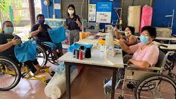
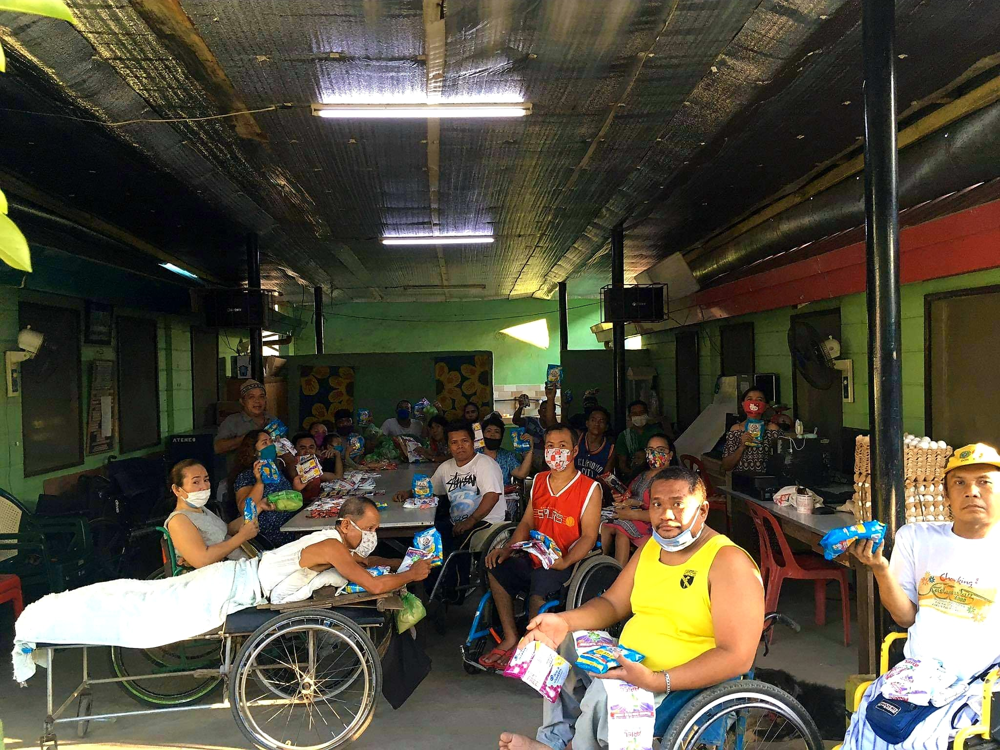

SAKADAB x PGH
INTRODUCTION OF THE SAKADAB

The SAKADAB or Ang Samahan ng May Kapansanan sa Dabaw is a community of differently-abled individuals.
As a community, there are no specific programs nor services which they offer.
Instead, they provide each other spiritual, moral, and financial support to live
a more meaningful life. Some of the activities of the community are farming,
baking, handicraft, woodcraft, and welding. The community produces
consumer products such as handicrafts.
The SAKADAB community was helped by the City Government of Davao
to help their vision of having their own homes turn their dream into
a reality. Because of this, they learned how to live by theirselves,
most notably by helping each other despite their disabilities.
They were able to establish a handicraft business as a source
of their income to manage their expenses. In which, they are
also given by their family members money to live up with their
livelihood.
The pressing issue the partner institution or the SAKADAB is facing is the lack of monetary
funds to assess their daily and medical needs. As said, they are unable to afford their needs
like more medical supplies due to the lack of funds that have been given to them.
Stated by the SADAKAB President, the money given to them is irregular from time to time, which
doesn’t give them the amount of money needed in order to buy their needs for
everyday life. Even during the pandemic, the need for medical supplies and the lack of customers have
drastically changed on how they manage their funds.
ABOUT THE WEB DESIGNER
David Torreon is an Atenean student who is also the class president of 9-Pignatelli. Despite
his big role in class, he is also known for being an iconic memer in the batch. Through funny medias
or through imitating a famous influencer named "IShowSpeed", he has gained popularity from the AdDU JHS
students because of this type of content. He is also known to be a caring family member and a friend and is the youngest
despite aging older than most of his batchmates. About his IShowSpeed imitation, he is mostly known in the school as
"IShowScaffold1", which his favorite line is "seryoso ka ba right now bro?". In all, David is the combination of
being a leader and being a memer at the same time. For the PGH, he is known to be the first hand engager of the group.
{kind=link}